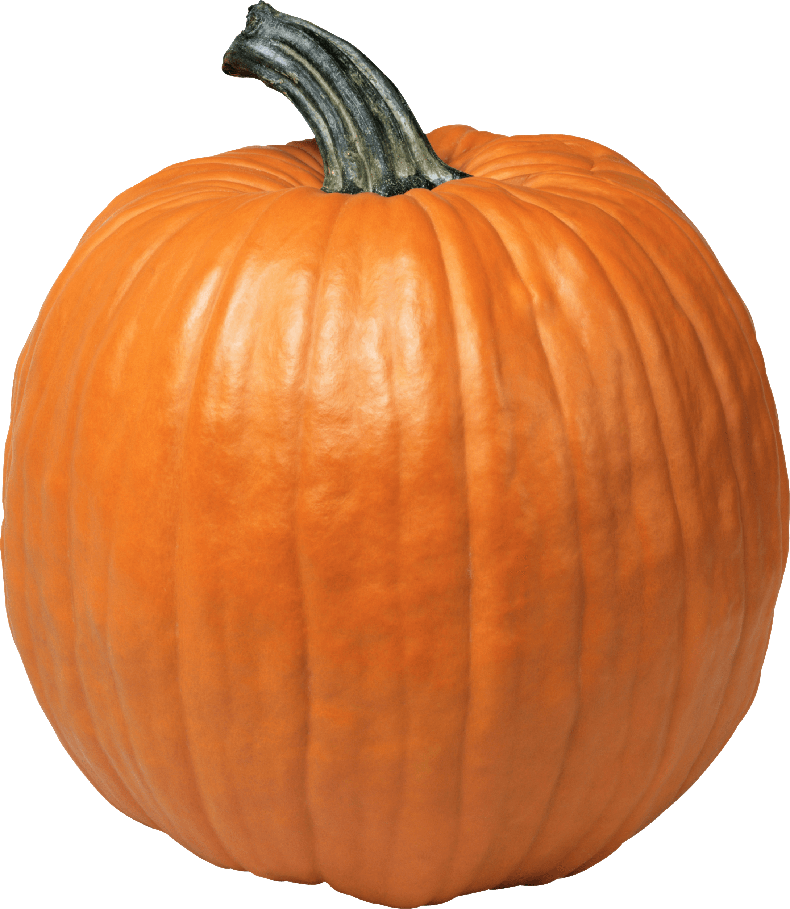

| Sabores | Precio | Disponibilidad |
| Verdura y pollo | $500 | Ok |
| Calabaza, muzzarella y salvia | $600 | Ok |
| Berenjena y tomate | $350 | Ok |
| Jamón y queso | $600 | Ok |
- Verdura y pollo
- Calabaza, muzzarella y salvia 
- Berenjena y tomate
- Jamón y queso
| Sabores | Precio | Disponibilidad | |||
| Verdura y pollo | $500 | $600 | Ok | Ok | 3 |